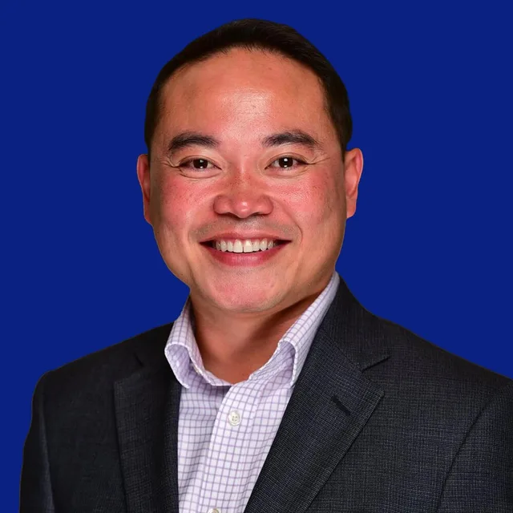
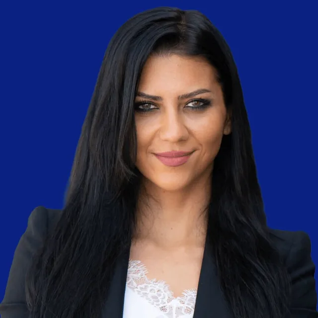
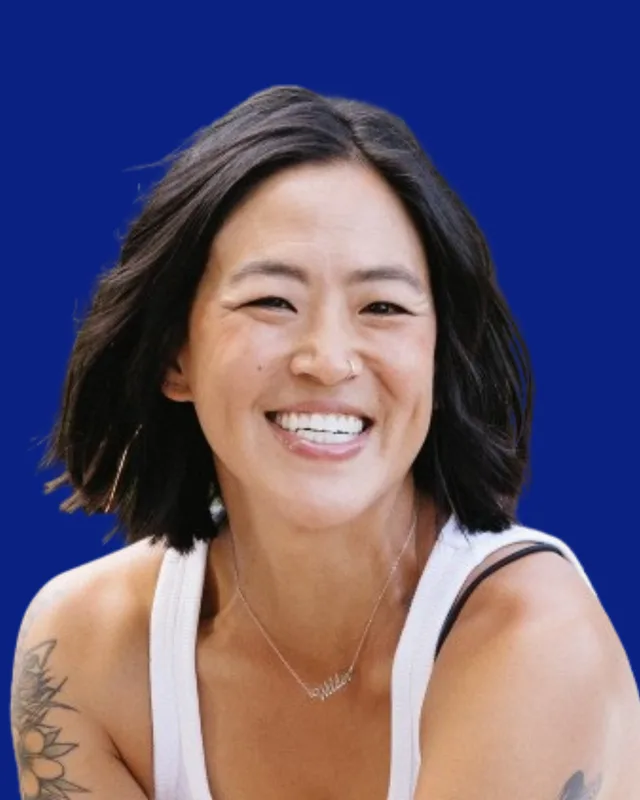
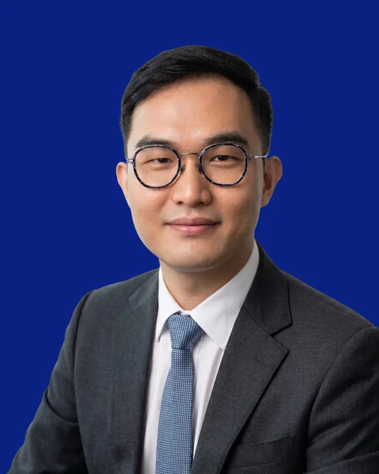
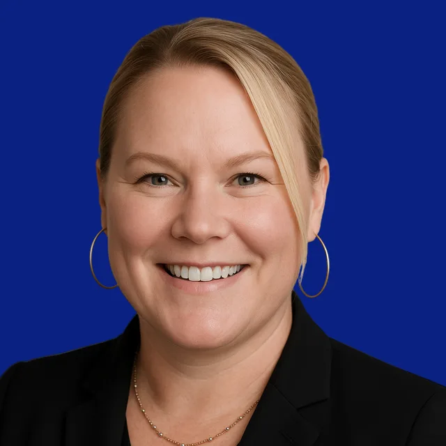
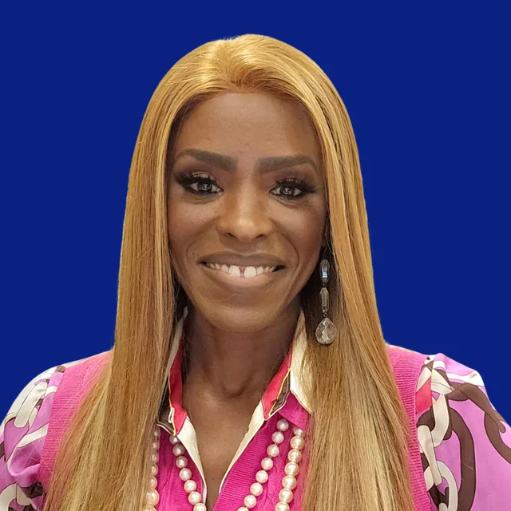

Experienced leaders empowering organizations with democratized data and deployable AI — ethically, and at global scale.
Our story
Alonsera is a new‑wave consultancy and unified ecosystem, designed to navigate and shape the age of intelligent systems.
With 30+ years of pioneering expertise, we combine the discipline of traditional consulting with hands-on engineering and product craft. As a minority and women-led firm, we champion diverse thinking so every organization can achieve sustainable growth and future readiness.
Leadership
Led from the front.
Christine Duque
Chief Executive Officer & Managing Partner
A distinguished leader at the forefront of ethical AI, digital transformation and innovative technology strategy, Christine has held influential leadership roles at Accenture, Deloitte and IBM — with a proven record of delivering over $2 billion in transformative, customer-centric solutions for Fortune 50/100/500 companies and emerging markets.
She leads Alonsera in delivering future-ready, responsible AI capabilities through an integrated approach — Strategic Consulting, Global AI Center of Excellence and Venture Studio — translating AI concepts into measurable commercial value. A recognized advocate in shaping international AI standards, she guides clients to embrace AI confidently, ensuring the journey is both transformative and ethically sound.
Nikos Acuña
Chief Technology Officer | Chief AI Officer · Head of Global AI CoE & Venture Studio
A pioneering researcher, technologist and founder with over two decades of experience in AI/ML/NLP platform development, business transformation and systems design. Nikos has deployed AI data products that have generated more than $300 million in revenue worldwide, and remains at the vanguard of machine-augmented design, data sovereignty and planetary-scale computation.
He heads the Alonsera Global AI Center of Excellence and Venture Studio, powered by Aion Research Corporation, where he serves as CEO — merging computer vision, systems engineering and generative models to unlock new frontiers of growth for enterprises, brands and innovators.
The bench
Builders, advisors, operators.
A global team spanning strategy, engineering, cybersecurity, learning, finance and venture — available and ready.
The leadership team

Tophe Enerio
Managing Partner

Lilit Davtyan
Co-Founder | Partner
DuWayne Milner
Partner — Strategy & Innovation Practice Lead
Strategic partners & practice leads
David Lin
Principal — Cybersecurity Practice Lead
Carl Horton
Founder & Managing Director, BlueAcumen
Minsan Park
Global Learning Practice Lead
Mazi Zarrehparvar
Program Director, Global Learning & Dialogues — Global AI CoE
Cyrus Daruwala
Chairman — ASEAN Economic Forum · Executive Director — OpenGov Asia
Kim Pham, CISSP
Chief of Staff · Information Security & Privacy Officer

Judy Tsuei
Identity & Performance Coach
Dr. Anita Polite-Wilson
Founder & CEO, Dr. Anita Enterprises

Jacob Lai
Digital Experience & Tech Consultant

Leila Pflager
Marketing Consultant
James Jang
Business Development Advisor — APAC Region
Delivery excellence
Brian Lin
Business Analyst
Connor Ruffalo
Business Analyst
Katherine Verrando
The wider team

Christi Anderson
Cory Kidd
Brandon Sou
Manisha Khemlani
Andrea Lin
Kristine Collins
Eleanor Heins
Eric Lekas
What we stand for
Rooted in responsibility.
01
Ethical leadership
Trust at the core of every outcome — governance frameworks that establish confidence from day one.
02
Practical innovation
A clear understanding of how to apply AI responsibly — research that becomes production, not shelfware.
03
Diverse thinking
A minority and women-led firm championing global perspectives for sustainable, future-ready growth.
Join the conversation
Ride the next wave with us.
Whether you’re an enterprise leader, founder or partner — we’d love to hear from you.
Superpower. Translating complex digital transformation into coordinated execution—aligning business, product, engineering, and data teams so strategy turns into measurable outcomes at scale. Q: What’s your street cred – what are you best known for? A: I’m known for leading enterprise transformation across GTM systems, MarTech, SalesTech, customer platforms, and revenue ecosystems—bringing strategy, technology, and execution together to deliver measurable business impact. I’ve built and scaled global marketing, CRM, and GTM capabilities, modernized operating models, and driven growth across retail, technology, payments, and pharma. My edge is combining deep Salesforce and MarTech expertise with strong product and portfolio leadership—turning complex ecosystems into connected, high-performing platforms that elevate customer experience and accelerate revenue. Q: What kind of impact do you help clients create? A: I help organizations move from fragmented capabilities to connected, customer-centric platforms that drive real business results. I lead end-to-end transformation across MarTech, loyalty, and customer data platforms, modernize CRM and marketing ecosystems, and design unified omnichannel engagement strategies. By aligning teams, processes, and technology into scalable operating models, I deliver measurable growth—improving acquisition, retention, and customer lifetime value.
Beyond work. I’m equally comfortable in discussing vision all the way into the weeds—whether it’s whiteboarding a transformation strategy or diving deep into the architecture and integrations that make it real. The best part is seeing it all come together when the team delivers.
Superpower. Bringing clarity and confidence to complex financial and operational decisions—especially in fast‑growing, high‑stakes environments. Q: What’s your street cred – what are you best known for? A: I’m a former CEO and CFO with deep experience across private startup and seasoned businesses. I’m best known for guiding fast‑growing private companies through transformation and scale, earning industry recognition as both “CEO of the Year” and “CFO of the Year.” I hold a B.B.A. from Woodbury University and a Master’s from USC Marshall School of Business. Q: What kind of impact do you help clients create? A: I help leaders turn growth ambitions into sustainable business models by:
How I help.
Designing financial and operational strategies that support scale
Strengthening governance, risk management, and performance discipline
Acting as a trusted advisor through major inflection points and transformations
Beyond work. I’m just as energized by mentoring over coffee as I am by boardroom strategy sessions—nothing makes me happier than watching a founder’s financial story finally “click.”
How I help.
Meet DuWayne Q: What’s your superpower? A: Turning bold, complex growth ideas into clear strategies and measurable results. Q: What’s your street cred – what are you best known for? A: I’m a strategist and growth architect with over three decades of experience guiding Fortune 500 and mid‑market firms through transformative change. At Equifax, I led strategy and innovation for Workforce Solutions, helping it grow from the smallest to the largest and fastest‑growing business unit, and I was a founding member of the AI Governance Council. Earlier at American Express Incentive Services, I led a complex multi‑platform migration across global development centers—under budget, with zero client churn—and earned patents for scalable, customer‑centric innovation. Q: What kind of impact do you help clients create? A: I help leaders: Shape strategy that actually translates into growth
Launch differentiated products grounded in value‑chain innovation
Embed responsible AI into core business models
Beyond work. I’m a CPA who loves both a clean balance sheet and a messy whiteboard session—my favorite days include a bit of each.
Superpower. Building security programs that are both practical and robust—protecting what matters while enabling the business to move fast. Q: What’s your street cred – what are you best known for? A: I’m a senior technology and information security leader experienced in orchestrating global InfoSec programs with strong governance, empowered security cultures, and high‑performing teams. I serve on the board of the National Technology Security Coalition (NTSC), a non‑partisan organization advocating for the CISO community with federal and state representatives and uniting public and private leaders around cybersecurity policy. Q: What kind of impact do you help clients create? A: I help organizations:
How I help.
Design and operationalize effective cybersecurity governance
Navigate elevated risk profiles in fast‑changing environments
Align security strategy with business priorities and regulatory realities
Beyond work. I love connecting people just as much as protecting systems—some of my favorite “security wins” start as simple community conversations.
Superpower. Bringing clarity, structure and alignment to complex business and technology challenges so organizations can make confident, data informed decisions. Q: What’s your street cred – what are you best known for? A: As Founder and Managing Director of Blue Acumen, I am known for building and leading high‑performing, outcome-oriented teams. Although my work centers on innovation, I am known for relationship development, executive governance and authentic communications to effectively solve challenges while reducing risks. Q: What kind of impact do you help clients create? A: I help clients:
How I help.
Establish business vision and capabilities roadmap around shared objectives in dynamic, high‑risk environments
Align teams on an enterprise solution that drives significant value creation and business impact
Create actionable recommendations and roadmaps, provide support implementing business recommendations and technology solutions and designing change management strategies to ensure and measure adoption of new capabilities.
Beyond work. I’m deeply committed to community development through education. I started my career as a Math teacher in an urban school and have continued to advocate for education reform to provide fundamental capabilities for our future generations.
Superpower. Designing learning experiences that actually change behavior—scaling skills, confidence, and leadership across entire organizations. Q: What’s your street cred – what are you best known for? A: I’m a seasoned learning and development professional with extensive experience designing and implementing innovative training programs. I’ve worked with multinational corporations like POSCO Group, Daewoo International Corporation, and TikTok, building a deep understanding of human capital development across industries and global markets. Q: What kind of impact do you help clients create? A: I help organizations:
How I help.
Build high‑impact learning strategies tied directly to business outcomes
Improve sales performance, team agility, and leadership capability
Design data‑informed, AI‑powered learning initiatives that deliver measurable performance improvements
Beyond work. I love translating complex skill maps into simple, engaging learning journeys—my favorite compliment is when a team says, “That was actually fun and useful.”
Superpower. Translating complex AI, data-governance, and sustainability challenges into practical training and programs that enable public-sector leaders to adopt responsible, auditable solutions. Q: What’s your street cred – what are you best known for? A: I’m Strategic Partner and AI Education & Enablement Public Sector Program Director at Alonsera, where I design and run large-scale AI training and enablement programs for governments and institutions. I’m best known for driving responsible AI adoption, data governance, and digital transformation across public-sector ministries and investor ecosystems. I’ve led 30+ years of investment and project leadership at organizations including Morgan Stanley and Hensel Phelps, directed international project development for state and defense projects, and currently direct the Korean AI Training Program at Oxford. Q: What kind of impact do you help clients create? A: I help leaders/clients:
How I help.
Move from AI concepts to operational training programs that build internal capability and accountability
Establish transparent, auditable ESG and data-governance standards that investors and regulators can trust
Align policy, technology, and practitioner training to scale sustainable digital transformation across ministries and regions
Beyond work. I’ve worked across finance, defense, and international development over a 30‑year career, and I hold degrees from UC Berkeley (BA), University of Chicago (MBA), and Oxford (MSc).
Superpower. Connecting regulators, financial institutions, and innovators to move entire markets toward modern, inclusive financial systems.
How I help.
Modernize banking and financial infrastructure
Navigate regulation while deploying AI, cloud, and analytics at scale
Build ecosystems across payments, fintech, and insuretech that drive inclusion
Beyond work. I’m passionate about financial inclusion, regulatory collaboration, and nurturing the next wave of fintech innovators across Singapore, India, Dubai, and beyond.
Superpower. Creating impact by translating complex ideas into actionable strategies — and building the people, programs, and infrastructure that actually hold up at scale. Q: What’s your street cred – what are you best known for? A: I've built award-winning security teams and initiatives from the ground up across 30+ countries, with honors from the European Parliament and the National Endowment for Democracy. As a CISSP-certified practitioner with 15+ years of experience, I bring deep expertise across risk management, governance, and security for healthcare, government, and professional services — and I've done it at every level, from hands-on program builds to board-level advisory. Q: What kind of impact do you help clients create? A: I help organizations turn complexity into clarity — and clarity into action:
How I help.
Translate technical challenges into language boards and executives can act on
Build the teams and infrastructure that sustain high performance over time
Design security and risk programs that are practical and built to last
Beyond work. I'm passionate about mental health and resilience for mission-critical teams. High performance isn't just about talent and execution — it's about building the human infrastructure that lets people show up fully, consistently, and sustainably.
Superpower. I help high-capacity leaders identify the unconscious patterns running their decisions, relationships, and behavior under pressure, and rewire them at the identity level. Not mindset. Not motivation. The actual internal code. Q: What’s your street cred – what are you best known for? A: I'm an award-winning identity and performance coach and published author with Simon & Schuster, working with founders, executives, and high-capacity leaders who are hitting invisible ceilings around money, visibility, and self-trust. I'm a Goldman Sachs 10,000 Small Businesses alumna and speaker, a Tory Burch Foundation Fellow, and recognized by San Diego Magazine as a Pioneer in Media and Marketing. I also facilitate professional development programming for the New York Public Library. My clients include directors and leaders at global organizations. I'm the creator of the Inner Blueprint Assessment, a proprietary diagnostic that maps the unconscious patterns shaping how a leader operates, decides, and grows. Q: What kind of impact do you help clients create? A: My clients learn to:
How I help.
Identify and dismantle unconscious patterns of over-giving, over-functioning, and self-erasure that have been running quietly for years.
Recalibrate identity, not just mindset, so their behavior under pressure actually changes instead of reverting.
Beyond work. Surfing, raising my daughter, and finding the best outdoor adventures in whatever city I land in. I also host a podcast (with an expletive in the name!), which means I am probably always in the middle of at least three paradigm-shifting conversations, one of them recorded.
Superpower. Transforming C‑Suites into elite teams by shifting high performance from “harder and faster” to “smarter and more human.” Q: What’s your street cred – what are you best known for? A: I’m a founder, CEO, and scholar‑practitioner with over 20 years of experience in human and organizational systems. I help executive teams across corporate, government, and nonprofit sectors move from passive “check‑the‑box initiatives” to proactive “change‑the‑culture behaviors.” I hold a Ph.D. and M.A. in Human and Organizational Systems from Fielding Graduate University, an M.A. in Organizational Leadership from Biola University, and a B.S. in Management from Pepperdine University. I’m also a certified Psychological S.A.F.E.T.Y. Practitioner, Gallup Certified Strengths Coach, and iPEC Certified Professional Coach. Q: What kind of impact do you help clients create? A: I help leaders and teams:
How I help.
Align people, roles, culture, and organizational dynamics for sustained success
Build agile, inclusive teams that thrive in today’s diverse workforce
Reframe performance and culture in ways that actually stick
Beyond work. I love seeing the lightbulb go on in a room full of executives—when they realize culture isn’t a side project, it’s their most strategic advantage.
How I help.
Meet Jacob Q: What’s your superpower? A: I help brands cut through the noise and actually stand out in the digital space. My sweet spot is building impactful digital experiences backed by smart automation and AI workflow. A pretty website without results is just an expensive art project. Q: What’s your street cred – what are you best known for? A: I’ve spent the bulk of my career delivering technology solutions for major enterprise brands across APAC and the U.S., with over USD $10 million worth of digital projects delivered to date. What I’m probably best known for is being the person who gets things done and getting difficult projects across the finish line, especially when business, marketing, and IT teams are stuck in a deadlock. One particular enterprise implementation is still talked about today because it finally went live after months of internal friction that seemingly had no end in sight. Turns out patience, translation skills, and a little diplomacy go a long way — skills that I’m sure all married men would understand. Q: What kind of impact do you help clients create? A: Over the years, I’ve developed a very specific skill set: I operate at the intersection of business and technology. I can speak the language of both sides: strategy, growth, ROI, customer experience on one end; systems, architecture, implementation, and delivery on the other. That “translator layer” is often the difference between a digital project that stalls and one that actually delivers results. A simpler illustration would be: (Business / Strategy / Product) ← me → (Project Managers / Architects / Developers) I help businesses: Identify gaps in digital experiences and translate them into measurable business objectives
Translate business ambition into technically executable digital roadmaps
Architect scalable digital ecosystems across CMS, CRM, CDP, and API-first platforms
Bridge the gap between executive stakeholders and technical delivery teams
Implement AI-assisted workflows that reduce operational overhead and improve delivery speed
Beyond work. Too many things to list, but lately I’ve been especially interested in sustainability-focused technology. The world needs fixing, and technology should play a role in that.
Superpower. I help high-growth startups and global enterprises bring their stories to market.
How I help.
I design scalable marketing programs that deliver business results
For Salesforce, I built partner marketing programs that drove 60% year-over-year increase in partner-influence ACV
I led marketing initiatives for an adtech startup, leading to a Google acquisition
Beyond work. I love building strong partnerships that lead to great work. Some of my best work has come to life from casual conversations that turn into actionable plans.
Superpower. Making complex cross‑border deals feel simple—connecting the right people, capital, and opportunities across Asia‑Pacific. Q: What’s your street cred – what are you best known for? A: I’m Alonsera’s APAC Business Development Advisor, with extensive experience in cross‑border M&A, private equity, secondary transactions, and fundraising. I also work with Hanwha Investment & Securities, leveraging deep industry knowledge to build strategic partnerships and unlock value for clients in highly competitive markets. Q: What kind of impact do you help clients create? A: I help organizations:
How I help.
Navigate cross‑border M&A and complex financial transactions
Build strategic partnerships that accelerate growth in APAC
Translate regional market dynamics into actionable deal strategies
Beyond work. I enjoy the art of a good deal as much as the numbers behind it—some of my best work starts over a simple conversation and a shared meal.
Superpower. Blending creativity and analysis—using research, structure, and storytelling to help teams make smarter, more human‑centered decisions. Q: What’s your street cred – what are you best known for? A: I’m a Business Analyst at Alonsera, supporting strategic decision‑making through research, process evaluation, and cross‑functional collaboration. I contribute to project management, operational analysis, and client‑facing initiatives that drive growth and efficiency. Born in Southern California and raised in Taiwan, I studied at a German Waldorf School and later at the Orange County School of the Arts as a cellist. I’m currently a Music major with a Business minor at UC Irvine, combining artistic training with business thinking. My experience spans social media advertising, accounting, and consulting, including roles at a social media advertising firm and Experience for Mankind Advertising Agency. Q: What kind of impact do you help clients create? A: I help organizations:
How I help.
Turn qualitative and quantitative insights into clear recommendations
Analyze processes and operations to find opportunities for improvement
Bridge creative, technical, and business perspectives on projects
Beyond work. I bring a cellist’s mindset to consulting—balancing structure, precision, and creativity in everything from slide decks to strategy discussions.
Superpower. Translating AI and data into clear, practical actions that help growing companies move from ideas to measurable results. Q: What’s your street cred – what are you best known for? A: I support client management, growth marketing, and business strategy for AI-driven transformation projects. I'm best known for bridging the gap between data, technology, and real business outcomes for middle-market and emerging clients. I recently graduated from UC Irvine with a degree in Business Economics and a Management minor in just two years, and I'm a SIEML full-tuition MBA scholar. I led brand marketing for UCI's Rocket Project Liquids Team, one of the most cutting-edge programs in collegiate rocketry, producing content around Methalox propulsion testing and launch. I also served on the executive board of Manifest, UCI's undergraduate entrepreneurship club, where I helped support early-stage startups and bolster the entrepreneurship community on campus. I additionally built a social commerce venture on TikTok Shop. Q: What kind of impact do you help clients create? A: I help teams:
How I help.
Turn AI‑centric strategies into concrete campaigns and workflows
Connect brand, operations, and technical teams around shared growth goals
Use experimentation and data to drive conversations on improvement
Beyond work. I spent nine years as an orchestral violinist, and if there's one thing the stage teaches you, it's that the show must go on.